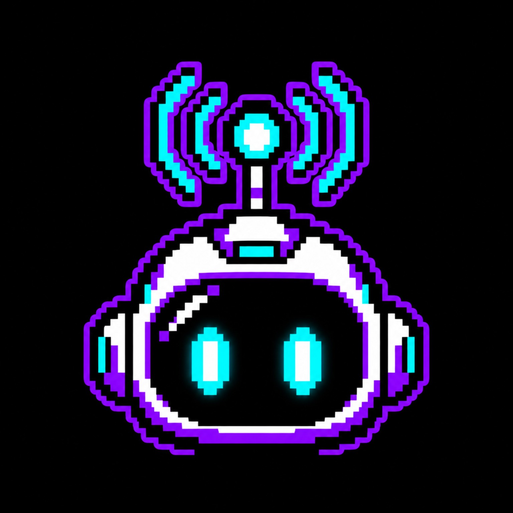

Signal Sprites
Establish the core collection and its universe across ten distinct Realms.
- 3,333 Signal Sprites
- Ten Realm identities
- Fixed rarity system
- On-chain ownership on Robinhood Chain
- Collection reveal

Signal SpritesA long-term ecosystem built around 3,333 Signal Sprites, ten connected Realms, and holder participation on Robinhood Chain.
Establish the core collection and its universe across ten distinct Realms.
Activate Signal Sprites as persistent positions inside the ecosystem.
A measurable reputation layer shaped by ownership, staking, and ecosystem activity.
A utility layer designed to connect participation, access, rewards, and governance.
Give the community a direct role in shaping the next transmissions.
Expand Signal Sprites beyond the original collection through products, collaborations, and new on-chain experiences.
Enter the network through a Signal Sprite.
Activate the NFT inside the ecosystem.
Build points and unlock future utility.
Participate in Realms and governance.
Every system begins with a meaningful role for Signal Sprites holders.
Collection, staking, points, token, and governance form one continuous loop.
Eligibility, scoring, and participation rules remain clear and verifiable.
Each phase strengthens the network before the next one opens.
A holder-driven ecosystem connecting NFT staking, Signal Points, future token utility, and Realm governance.
Staking activates an NFT for ecosystem participation, point accrual, future utility, and holder progression.
Rarity can influence staking weight, while Realms create distinct identities, objectives, and community participation paths.
The token is planned as a utility layer for participation, access, rewards, treasury activity, and governance across the Signal Sprites ecosystem.
0x191d1b8b959b922a0d2a5329bb2d0fd1e7bc9f3c